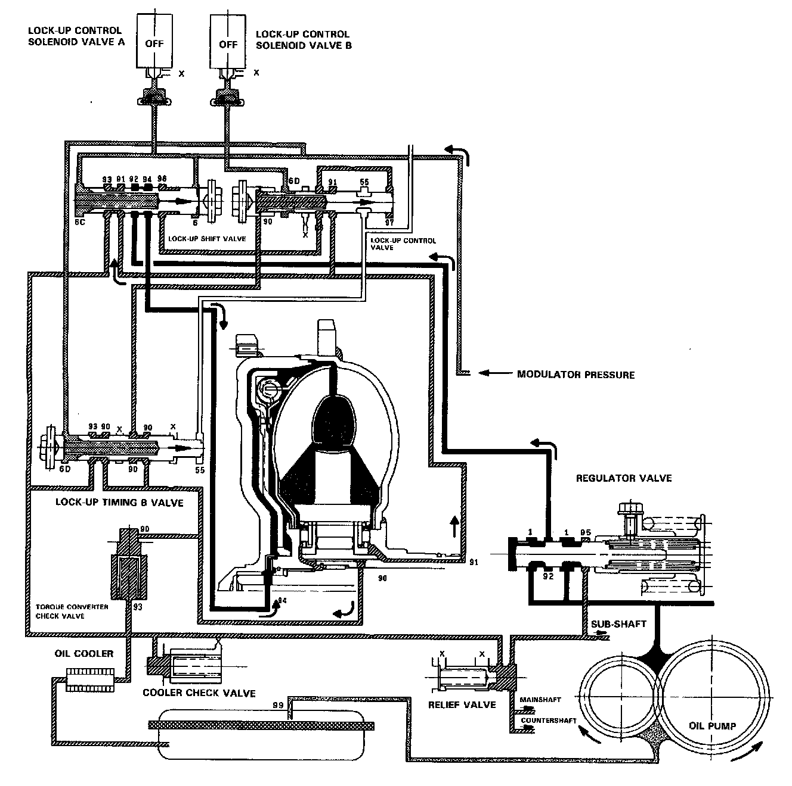

No Lock-Up
NO LOCK-UP
The pressurized fluid regulated by the modulator works on both ends of the lock-up shift valve and on the left side of the lock-up control valve. Under this condition, the pressures working on both ends of the lock-up shift valve are equal, the shift valve is moved to the right side by the tension of the valve spring alone. The fluid from the oil pump will flow through the left side of the lock-up clutch to the torque converter; i,e., the lock-up clutch is in OFF condition.
NOTE: When used, "left" or "right" indicates direction on the flowchart.